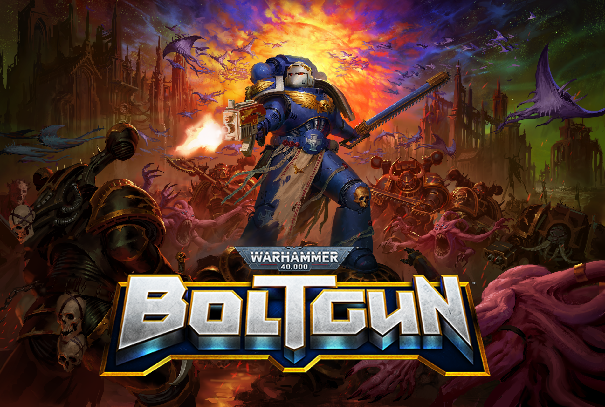

Warhammer 40,000: Boltgun
Platforms: Steam, Steam deck verified, PlayStation 4, Playstation 5, Xbox one, Xbox series X, Switch
Technology: Unreal Engine 4, C++, Blueprints
Duration: 2 Years
Boltgun is a retro first person shooter set in the Warhammer 40k universe created by Auroch Digital, published by Focus Entertainment.
I worked the full production cycle on Boltgun as a generalist programmer building up many of the core systems used in the project.
- Worked alongside design to create weapons and grenades which fit the exaggerated nature of the 40K universe
- Expanded the sprite based animation system to allow animators to control material parameters and manage complex niagara system interactions
- Programmed FSM based AI enemy characters including adding behaviours such as infighting, an arena positioning system and NPC attacks
- Designed and implemented the movement algorithm for simple Flying AI
- Responsible for all of the UI programming, using Slate and UMG to add functionality to UIs wireframes. Additionally creating a framework for multiplatform support, allowing hotswapping gamepad and KBAM